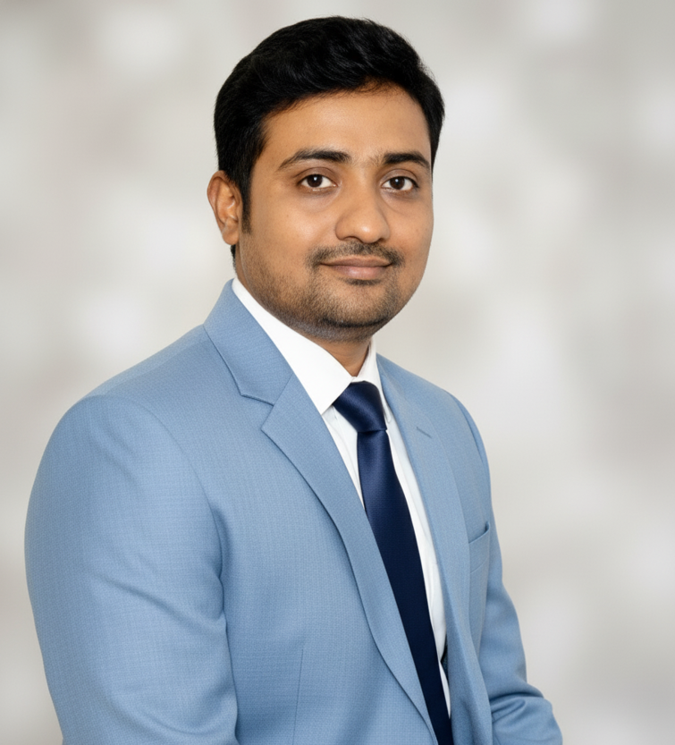

Building scalable, production-ready systems
Technical Lead with 14+ years of experience delivering enterprise-grade .NET solutions across finance, insurance, government, and manufacturing domains.

About Me
I am a Technical Lead and .NET Full Stack Engineer with extensive experience in system design, modernization of legacy platforms, and enterprise delivery. I specialize in building reliable, maintainable systems and leading teams through complex technical transformations.
Core Skills
- .NET (C#, ASP.NET Core, Blazor)
- Web API · Microservices · System Design
- Angular · JavaScript · HTML · CSS
- SQL Server · Entity Framework · ADO.NET
- Azure · CI/CD · Azure DevOps
- Agile · Team Leadership · Mentoring
- AI Tools· GitHub Copilot · Cursor . Cluade . Antigravity
Experience
Technical Lead · Version 1
2022 – PresentLeading modernization initiatives for enterprise systems, including migration of legacy VB6 applications to modern .NET Blazor platforms. Responsible for architecture, delivery, code quality, CI/CD, and mentoring teams.
Lead / Senior .NET Developer
2016 – 2022Delivered high-scale systems for capital markets and insurance clients, working closely with stakeholders, managing cross-functional teams, and ensuring secure, scalable solutions.
Additional experience details available on LinkedIn or CV.
Projects
Selected enterprise projects and system design case studies. (Add links or descriptions here as needed.)